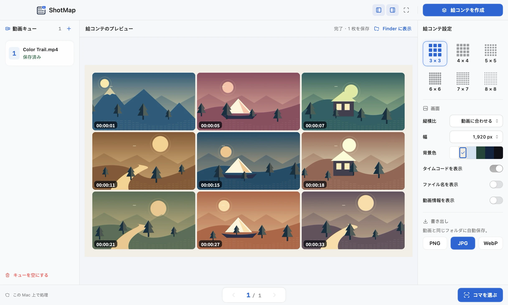

Mac で MP4 から 3 × 3 の絵コンテを作る
動画から 9 コマを自動で選び、1 枚の JPG にまとめます。
このガイドでは macOS 13 以降で ShotMap 0.2.20 と、36 秒・960 × 540 のサンプル動画 Color Trail.mp4 を使います。動画をファイルの保存が可能なフォルダに置いてください。
サンプル動画 Color Trail.mp4 をダウンロード
- Color Trail.mp4 を動画のキューにドラッグします。キューの見出し横にある + ボタンからも追加できます。
- 絵コンテ設定で 3 × 3、動画に合わせる、1920 px、JPG を選びます。アイボリーの背景色とタイムコード表示を使い、ファイル名と動画情報の表示はオフにします。
- 絵コンテを作成をクリックします。キューに保存済みと表示され、プレビューに 9 コマが並ぶまで待ちます。

書き出した画像を確認
プレビュー上部のFinder に表示をクリックします。Color Trail.mp4 と同じフォルダにある JPG を開き、9 コマとタイムコードを確認します。